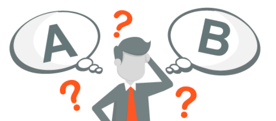

Competências socioemocionais referem-se a um conjunto de
habilidades que envolvem o entendimento, a expressão e a
regulação das emoções, bem como a capacidade de estabelecer
relacionamentos interpessoais saudáveis.
Essas competências são cruciais para o desenvolvimento humano
integral e desempenham um papel fundamental em diversas áreas da vida,
incluindo educação, trabalho, relacionamentos e bem-estar geral.
Inteligência Emocional
A Inteligência Emocional (IE) é um conceito desenvolvido pelo psicólogo Daniel Goleman que descreve a capacidade
de reconhecer, entender, gerenciar e utilizar as próprias emoções, bem como compreender e influenciar as emoções
dos outros. A IE vai além da inteligência tradicional medida por testes de QI (Quociente de Inteligência),
enfocando aspectos emocionais e sociais que são fundamentais para o sucesso pessoal e profissional.
Autoconhecimento
Esta é a capacidade de reconhecer e compreender as próprias emoções. Envolve a consciência
de sentimentos, a compreensão das causas por trás desses sentimentos e a capacidade de identificar
como as
emoções afetam o comportamento.
Autocontrole
Refere-se à habilidade de regular e controlar as próprias emoções, evitando reações
impulsivas. Pessoas com alto autocontrole são capazes de lidar eficazmente com situações
estressantes e manter a calma em momentos desafiadores.
Automotivação
Envolve a capacidade de motivar a si mesmo, estabelecer metas alcançáveis e manter um estado
de espírito positivo, mesmo diante de obstáculos. Indivíduos com automotivação tendem a ser
persistentes e orientados para o alcance de objetivos.
Empatia
É a habilidade de compreender e compartilhar os sentimentos dos outros. Envolve a capacidade
de se colocar no lugar do outro, reconhecendo e respeitando suas perspectivas e emoções.
Habilidades Sociais
Refere-se à aptidão para construir e manter relacionamentos saudáveis.
Inclui a capacidade de se comunicar efetivamente, resolver conflitos, negociar e colaborar com os
outros.
A Inteligência Emocional é vista como uma competência essencial em diversos contextos, incluindo o ambiente de
trabalho, relações interpessoais, liderança e educação. Pessoas com alta IE geralmente têm maior sucesso em suas
carreiras, são líderes eficazes, mantêm relacionamentos interpessoais mais satisfatórios e têm melhor saúde
mental.
Desenvolver a Inteligência Emocional envolve práticas como a autorreflexão, a busca por feedback, a prática da
empatia e o aprimoramento contínuo das habilidades sociais. Essas habilidades podem ser cultivadas ao longo do
tempo, resultando em benefícios significativos para o indivíduo em diversas áreas da vida.
Empatia
A empatia é uma habilidade fundamental da inteligência emocional que envolve a capacidade de compreender e
compartilhar os sentimentos de outra pessoa, imaginando-se no lugar dela. Essa capacidade permite que uma pessoa
sinta e compreenda as emoções, perspectivas e experiências alheias de uma maneira mais profunda e compassiva.
Aqui estão alguns aspectos detalhados sobre empatia:
Reconhecimento das Emoções dos Outros
Sensibilidade Emocional: A empatia começa com a habilidade de perceber e identificar as emoções dos
outros. Isso envolve a capacidade de captar sinais não verbais, linguagem corporal e expressões
faciais.
Compreensão das Perspectivas Alheias
Perspectiva-Tomada de Outro: Além de reconhecer as emoções, a empatia envolve entender as
perspectivas, pensamentos e sentimentos da outra pessoa. Isso requer a capacidade de se colocar no
lugar dela,
imaginando como seria estar em sua situação.
Expressão de Cuidado e Preocupação
Conexão Emocional: A empatia vai além da simples compreensão; inclui a expressão de cuidado e
preocupação genuínos pelas emoções e bem-estar da outra pessoa. É um elemento crucial para construir
relacionamentos saudáveis.
Escuta Ativa
Atenção Plena na Comunicação: Uma parte essencial da empatia é a habilidade de ouvir
ativamente. Isso significa prestar total atenção ao que a outra pessoa está dizendo, sem
interrupções, e
demonstrar interesse real em compreender seus sentimentos.
Resposta Compassiva
Apoio e Solidariedade: A empatia muitas vezes se traduz em ações que mostram apoio e
solidariedade. Isso pode envolver oferecer palavras de conforto, ajudar de maneira prática ou
simplesmente estar presente para a outra pessoa.
Distinção entre Simpatia e Empatia
Simpatia: Simpatia refere-se a sentir pena ou compaixão pelas dificuldades
alheias. É uma resposta mais externa. Já a empatia é mais profunda, envolvendo
a verdadeira compreensão e compartilhamento emocional.
Empatia Consigo Mesmo
Autocompaixão: Além de se relacionar com os sentimentos dos outros,
a empatia também pode se estender a si
mesmo. A capacidade de compreender e aceitar suas próprias emoções
com compaixão é uma parte importante do
desenvolvimento emocional.
A empatia é uma habilidade valiosa em diversas áreas da vida, incluindo relações pessoais, ambiente de trabalho,
liderança e saúde mental. Cultivar a empatia requer prática consciente e a disposição de se conectar
emocionalmente com os outros, contribuindo para um entendimento mais profundo e uma sociedade mais compassiva.
Comunicação Efetiva
A comunicação efetiva é a habilidade de expressar pensamentos, ideias e sentimentos de maneira clara, precisa e
compreensível, de modo a alcançar os objetivos desejados. Ela não se limita apenas à transmissão de informações,
mas também envolve a capacidade de ouvir ativamente, adaptar a mensagem ao público-alvo e garantir que a
comunicação seja compreendida e interpretada corretamente. Aqui estão alguns aspectos detalhados sobre
comunicação efetiva:
Linguagem Acertiva:
Escolha de Palavras: Utilizar palavras claras e concisas, evitando jargões ou terminologia
excessivamente técnica, especialmente quando o público pode não estar familiarizado com o assunto.
Estrutura da Mensagem: Organizar as informações de forma lógica e estruturada para facilitar a
compreensão. Começar com uma introdução, seguida de pontos principais e, finalmente, uma conclusão.
Adaptação ao Público
Conhecimento do Público: Compreender as características e necessidades do público-alvo para ajustar
o tom, o estilo e o nível de detalhes da comunicação.
Empatia: Considerar as emoções e perspectivas do público para se comunicar de maneira mais relevante
e envolvente.
Ouvir Ativamente
Foco na Escuta: Dar atenção total ao interlocutor, evitando distrações, para compreender
completamente sua mensagem.
Feedback: Proporcionar retorno ao interlocutor para garantir que a comunicação seja bidirecional,
promovendo entendimento mútuo.
Expressão Não-Verbal
Linguagem Corporal: Conscientização e controle da linguagem corporal para transmitir confiança,
abertura e interesse.
Expressões Faciais: Utilizar expressões faciais condizentes com a mensagem para reforçar ou
complementar a comunicação verbal.
Habilidade de Síntese
Resumo de Ideias: Ser capaz de resumir informações complexas de forma concisa, destacando os pontos
mais importantes.
Evitar Redundâncias: Eliminar informações desnecessárias que possam confundir ou sobrecarregar o
interlocutor.
Respeito e Cortesia:
Respeito às Opiniões: Mostrar respeito pelas opiniões e perspectivas dos outros, mesmo em casos de
discordância.
Cortesia: Utilizar uma linguagem educada e considerada, evitando linguagem ofensiva ou
desrespeitosa.
Feedback Construtivo
Feedback Positivo e Negativo: Fornecer feedback de maneira construtiva, destacando o que foi bem
feito e oferecendo sugestões para melhorias.
Abertura ao Feedback: Estar aberto para receber feedback e fazer ajustes na comunicação conforme
necessário.
Habilidade de Adaptação
Flexibilidade: Ser capaz de adaptar a comunicação com base na situação, no público e nos objetivos
específicos.
Ajuste durante a Conversa: Fazer ajustes durante a interação, caso seja percebida alguma confusão ou
mal-entendido.
A comunicação efetiva é uma habilidade vital em todas as áreas da vida, incluindo o ambiente de trabalho,
relacionamentos pessoais, educação e liderança. Desenvolver essa habilidade envolve prática consciente,
autenticidade e a capacidade de se adaptar a diferentes contextos e públicos.
Resolução de Conflitos
A resolução de conflitos é um processo que visa abordar e solucionar desentendimentos ou disputas de maneira
construtiva e eficaz. Essa habilidade é fundamental em ambientes pessoais e profissionais, pois conflitos são
inevitáveis, mas a maneira como são gerenciados pode impactar significativamente o relacionamento entre as
partes envolvidas. Aqui estão alguns aspectos detalhados sobre a resolução de conflitos:
Identificação do Conflito
Consciência do Conflito: Reconhecer a existência do conflito e entender suas causas. Isso pode
envolver a observação de mudanças no comportamento, comunicação ou desacordo manifesto.
Compreensão das Causas
Análise Profunda: Investigar as raízes do conflito, considerando fatores como diferenças de
perspectiva, valores, necessidades ou expectativas. Isso pode envolver diálogo aberto e
questionamento para obter uma compreensão completa.
Comunicação Clara e Aberta
Expressão de Sentimentos e Preocupações: Encorajar as partes envolvidas a expressarem abertamente
seus sentimentos, preocupações e pontos de vista.
Escuta Ativa: Ouvir com atenção as perspectivas de todas as partes, demonstrando compreensão e
validação.
Estabelecimento de Objetivos Comuns
Identificação de Interesses Compartilhados: Identificar objetivos ou interesses que são comuns a
ambas as partes, facilitando a busca por soluções que beneficiem ambos os lados.
Definição de Metas para a Resolução: Estabelecer metas claras e realistas para a resolução do
conflito.
Geração de Opções de Solução
Brainstorming: Encorajar a criação de uma variedade de opções para resolver o conflito. Isso pode
incluir sugestões das partes envolvidas e a busca por soluções inovadoras.
Avaliação de Alternativas: Analisar as opções geradas, considerando suas vantagens e desvantagens em
relação aos interesses das partes.
Negociação e Acordo
Negociação Construtiva: Facilitar a negociação entre as partes para chegar a um acordo mutuamente
aceitável. Isso pode envolver ceder em alguns pontos para ganhar em outros.
Compromisso: Encorajar ambas as partes a comprometerem-se a implementar as soluções acordadas.
Implementação das Soluções
Plano de Ação: Desenvolver um plano de ação detalhado para implementar as soluções acordadas. Isso
pode envolver a definição de prazos, responsabilidades e medidas de acompanhamento.
Acompanhamento: Monitorar o progresso da implementação e ajustar o plano conforme necessário.
Aprendizado e Crescimento
Reflexão: Refletir sobre o processo de resolução de conflitos para identificar lições aprendidas.
Melhoria Contínua: Utilizar a experiência para aprimorar as habilidades de resolução de conflitos e
prevenir conflitos futuros.
A resolução de conflitos bem-sucedida requer empatia, habilidades de comunicação, flexibilidade e um compromisso
com a colaboração. Ao abordar conflitos de maneira construtiva, é possível transformar situações desafiadoras em
oportunidades de crescimento e fortalecimento dos relacionamentos.
Trabalho em Equipe
O trabalho em equipe refere-se à colaboração de indivíduos com diferentes habilidades, conhecimentos e
experiências para alcançar objetivos comuns de maneira eficaz e eficiente. Essa forma de cooperação envolve a
comunicação efetiva, a confiança mútua e a divisão de tarefas para atingir metas compartilhadas. Aqui estão
alguns aspectos detalhados sobre o trabalho em equipe:
Objetivos Comuns:
Definição Clara de Objetivos: Estabelecer metas e objetivos claros e compartilhados pela equipe.
Todos os membros devem ter uma compreensão comum do que estão tentando alcançar.
Comunicação Efetiva
Canais de Comunicação Abertos: Promover uma comunicação aberta e transparente dentro da equipe. Isso
inclui expressar ideias, ouvir ativamente e fornecer feedback construtivo.
Utilização de Ferramentas de Comunicação: Uso de ferramentas e tecnologias apropriadas para
facilitar a comunicação, especialmente em equipes distribuídas geograficamente.
Confiança Mútua
Transparência: Ser transparente nas ações e decisões, construindo assim confiança entre os membros
da equipe.
Cumprimento de Compromissos: Cumprir as responsabilidades e compromissos assumidos, estabelecendo
assim uma base sólida de confiança.
Diversidade e Complementaridade
Valorização da Diversidade: Reconhecimento e apreciação das diferentes habilidades, perspectivas e
experiências de cada membro da equipe.
Complementaridade de Habilidades: Aproveitar as habilidades individuais para criar uma equipe que
seja mais forte e mais capaz do que a soma de suas partes.
Divisão de Tarefas:
Atribuição de Responsabilidades: Designar tarefas e responsabilidades de acordo com as habilidades
individuais e interesses, levando em consideração as metas da equipe.
Colaboração Efetiva: Trabalhar em conjunto para alcançar objetivos, compartilhando conhecimentos e
recursos.
Resolução de Conflitos
Abordagem Construtiva: Enfrentar os conflitos de maneira construtiva, buscando soluções em vez de
culpar ou criar divisões.
Mediação: Se necessário, utilizar mediação para ajudar a resolver disputas e manter a coesão da
equipe.
Motivação e Reconhecimento
Incentivo e Reconhecimento: Reconhecer e recompensar o bom desempenho individual e coletivo para
motivar a equipe.
Fomento de um Ambiente Positivo: Criar um ambiente de trabalho positivo que inspire e encoraje o
engajamento.
Adaptação e Flexibilidade
Adaptação a Mudanças: Estar disposto a se adaptar a mudanças nas circunstâncias ou nos objetivos da
equipe.
Flexibilidade de Papéis: Ser flexível em relação aos papéis e responsabilidades, permitindo que os
membros assumam funções diferentes conforme necessário.
Aprendizado Contínuo
Cultura de Aprendizado: Fomentar uma cultura que valorize o aprendizado contínuo, incentivando a
melhoria constante individual e da equipe.
Feedback Construtivo: Oferecer e receber feedback construtivo para impulsionar o desenvolvimento
pessoal e coletivo.
Autoconhecimento
O autoconhecimento é o processo de compreender e ter uma consciência profunda de quem você é como indivíduo.
Envolve a exploração e o entendimento das suas próprias características, valores, crenças, emoções, habilidades,
limitações e motivações. Aqui estão alguns aspectos detalhados sobre o autoconhecimento:
Reflexão Pessoal
Análise de Experiências: Refletir sobre suas experiências de vida, tanto positivas quanto negativas,
para entender como elas moldaram quem você é.
Questionamento Interno: Fazer perguntas a si mesmo sobre suas escolhas, preferências, sucessos e
desafios.
Exploração de Valores e Crenças
Identificação de Valores: Identificar e definir seus valores fundamentais - princípios que são
importantes para você e que orientam suas decisões e comportamentos.
Exame de Crenças Limitadoras: Identificar crenças que podem limitar seu crescimento pessoal e
profissional e desafiá-las de maneira construtiva.
Autoavaliação de Habilidades e Competências
Identificação de Pontos Fortes: Reconhecer e valorizar suas habilidades, talentos e pontos fortes.
Conscientização de Áreas de Desenvolvimento: Identificar áreas em que você pode melhorar e
desenvolver novas habilidades.
Compreensão das Emoções
Autoconsciência Emocional: Reconhecer e compreender suas emoções, identificando padrões emocionais e
a influência delas em seu comportamento.
Expressão Emocional Saudável: Desenvolver a capacidade de expressar emoções de maneira saudável e
assertiva.
Análise de Motivações
Identificação de Motivações Pessoais: Compreender as razões subjacentes às suas escolhas e ações,
explorando o que o impulsiona e motiva.
Alinhamento com Objetivos: Avaliar se suas metas e aspirações estão alinhadas com suas verdadeiras
motivações.
Avaliação de Personalidade
Autoconhecimento através de Ferramentas de Avaliação: Utilizar ferramentas como testes de
personalidade para obter insights sobre características pessoais, preferências e estilos de
comunicação.
Aceitação da Diversidade Pessoal: Reconhecer e aceitar a diversidade de traços de personalidade
dentro de si mesmo.
Prática da Mindfulness e Atenção Plena
Atenção ao Presente: Praticar a atenção plena para ficar mais consciente do momento presente,
reduzindo distrações e promovendo uma maior consciência de si mesmo.
Observação Não Julgadora: Observar seus pensamentos, emoções e sensações sem julgamento, cultivando
uma atitude de compaixão consigo mesmo.
Desenvolvimento Contínuo
Abertura à Mudança: Estar aberto a mudanças e ao crescimento pessoal contínuo.
Busca por Feedback: Buscar feedback de fontes confiáveis para ganhar uma perspectiva externa sobre
si mesmo.
O autoconhecimento é uma jornada contínua e dinâmica. Quanto mais você se conhece, mais capacitado estará para
tomar decisões alinhadas com seus valores, lidar com desafios, construir relacionamentos significativos e
perseguir metas pessoais e profissionais de maneira autêntica. Essa prática constante de reflexão e exploração
interna é crucial para o desenvolvimento pessoal e para uma vida mais plena e autêntica.
Resiliência
A resiliência é uma habilidade psicológica e emocional que envolve a capacidade de se adaptar, superar
adversidades, lidar com situações de estresse e se recuperar de experiências desafiadoras. Pessoas resilientes
são capazes de enfrentar dificuldades, aprender com essas experiências e seguir em frente com uma atitude
positiva. Aqui estão alguns aspectos detalhados sobre a resiliência:
Adaptação a Mudanças
Flexibilidade: A resiliência está relacionada à capacidade de se ajustar a mudanças, sejam elas
positivas ou negativas.
Aceitação de Mudanças Inevitáveis: Compreensão de que mudanças fazem parte da vida e que, em muitos
casos, é necessário se adaptar a novas circunstâncias.
Mentalidade Positiva
Otimismo Realista: Manter uma visão otimista da vida, mesmo diante de desafios, combinada com uma
compreensão realista da situação.
Foco em Soluções: Concentrar-se em encontrar soluções para os problemas em vez de se concentrar
apenas nos aspectos negativos.
Autoconfiança e Autoeficácia
Crença em Si Mesmo: Ter confiança em suas próprias habilidades e capacidade de enfrentar desafios.
Senso de Controle: Acreditar que tem algum controle sobre sua vida e suas escolhas, mesmo em
situações difíceis.
Rede de Apoio Social
Relacionamentos Fortes: Cultivar relacionamentos significativos e de apoio que possam fornecer
suporte emocional durante momentos difíceis.
Compartilhamento de Experiências: Abrir-se para compartilhar suas experiências com amigos,
familiares ou profissionais de saúde.
Habilidade de Lidar com a Adversidade
Resistência Psicológica: Desenvolver uma resistência psicológica para enfrentar o estresse e as
pressões sem ser abalado.
Capacidade de Enfrentamento: Desenvolver estratégias eficazes de enfrentamento para lidar com
situações desafiadoras, como a busca por soluções práticas ou a prática da aceitação.
Aprendizado com Experiências
Reflexão: Refletir sobre as experiências, analisando o que funcionou, o que não funcionou e o que
pode ser aprendido.
Crescimento Pessoal: Ver as experiências desafiadoras como oportunidades de crescimento pessoal e
aprendizado.
Gestão de Emoções
Autocontrole: Desenvolver a habilidade de controlar emoções intensas e lidar com o estresse de
maneira saudável.
Aceitação de Emoções: Permitir-se sentir e expressar emoções, reconhecendo que são reações normais a
situações desafiadoras.
Foco no Autocuidado
Priorização da Saúde Mental e Física: Cuidar do corpo e da mente, incluindo hábitos de sono
saudáveis, atividade física e práticas de relaxamento.
Estabelecimento de Limites: Saber quando dizer "não" e estabelecer limites saudáveis para evitar o
esgotamento.
Persistência e Determinação
Não Desistir: Demonstração de persistência e determinação diante de obstáculos, mesmo quando as
coisas parecem difíceis.
Enfrentamento de Fracassos: Lidar com fracassos sem ver isso como um fim, mas como uma oportunidade
de recomeço.
A resiliência é uma habilidade que pode ser desenvolvida ao longo do tempo com prática e autenticidade. Ela
desempenha um papel crucial na promoção do bem-estar mental e na capacidade de enfrentar os desafios da vida com
força e determinação.
Autocontrole
O autocontrole é uma habilidade essencial que envolve a capacidade de regular e gerenciar comportamentos,
emoções, impulsos e reações em diferentes situações. Essa habilidade é fundamental para a tomada de decisões
conscientes, o alcance de metas a longo prazo e a manutenção de relacionamentos saudáveis. Aqui estão alguns
aspectos detalhados sobre o autocontrole:
Autoconsciência
Monitoramento Interno: Estar atento aos próprios pensamentos, sentimentos e impulsos.
Reconhecimento de Gatilhos: Identificar situações, emoções ou eventos que podem desencadear reações
impulsivas.
Gestão Emocional
Identificação de Emoções: Reconhecer e nomear emoções de maneira precisa.
Regulação Emocional: Desenvolver estratégias para lidar com emoções intensas, como o estabelecimento
de perspectivas positivas, a prática da atenção plena ou o redirecionamento de pensamentos.
Controle de Impulsos
Pausa Reflexiva: Antes de agir impulsivamente, pausar para refletir sobre as possíveis
consequências.
Avaliação de Alternativas: Considerar diferentes opções de resposta antes de tomar uma decisão.
Tomada de Decisão Consciente:
Avaliação de Prioridades: Avaliar as prioridades e objetivos antes de agir.
Ponderação de Consequências: Considerar as consequências a longo prazo em vez de buscar gratificação
instantânea.
Resistência a Tentações
Autoafirmação: Reforçar metas pessoais e compromissos para resistir a comportamentos indesejados.
Foco em Objetivos: Manter o foco nos objetivos de longo prazo em vez de ceder a desejos momentâneos.
Adaptação a Mudanças
Flexibilidade: Adotar uma abordagem flexível diante de mudanças inesperadas ou imprevistas.
Resiliência: Lidar com a frustração e o estresse de maneira construtiva, buscando soluções em vez de
reagir impulsivamente.
Comunicação Assertiva
Expressão Controlada: Comunicar-se de maneira clara e assertiva, evitando reações impulsivas ou
agressivas.
Escuta Ativa: Praticar a escuta ativa para entender melhor as perspectivas dos outros antes de
responder.
Gerenciamento de Estresse
Estratégias de Relaxamento: Utilizar técnicas de relaxamento, como respiração profunda, meditação ou
atividade física, para controlar o estresse.
Estabelecimento de Limites: Reconhecer os próprios limites e evitar sobrecarregar-se com
responsabilidades excessivas.
Desenvolvimento Pessoal Contínuo
Aprendizado e Crescimento: Encarar desafios como oportunidades de aprendizado e crescimento pessoal.
Busca por Feedback: Estar aberto ao feedback construtivo para identificar áreas de melhoria.
Autoaceitação
Aceitação de Imperfeições: Reconhecer que todos têm limitações e imperfeições.
Compaixão por Si Mesmo: Praticar a autocompaixão ao enfrentar dificuldades ou cometer erros.
O desenvolvimento do autocontrole requer prática constante, autorreflexão e autodisciplina. A capacidade de
regular comportamentos e emoções é uma habilidade valiosa que contribui para a eficácia pessoal, profissional e
relacional. O autocontrole não implica na supressão de emoções, mas na gestão saudável e consciente delas para
promover escolhas alinhadas com objetivos e valores pessoais.
Tomada de Decisão Responsável

O desenvolvimento do autocontrole requer prática constante, autorreflexão e autodisciplina. A capacidade de
regular comportamentos e emoções é uma habilidade valiosa que contribui para a eficácia pessoal, profissional e
relacional. O autocontrole não implica na supressão de emoções, mas na gestão saudável e consciente delas para
promover escolhas alinhadas com objetivos e valores pessoais.
Coleta de Informações
Pesquisa e Análise: Obter informações relevantes e realizar análises aprofundadas sobre as opções
disponíveis.
Fontes Diversificadas: Buscar uma variedade de fontes para obter perspectivas diversas e informações
precisas.
Definição de Objetivos
Clarificação de Metas: Estabelecer claramente os objetivos e metas da decisão, considerando o
impacto a curto e longo prazo.
Alinhamento com Valores: Certificar-se de que a decisão esteja alinhada com os valores e princípios
éticos pessoais e organizacionais.
Identificação de Alternativas
Criatividade na Geração de Opções: Explorar diversas alternativas e soluções para abordar o problema
ou atingir o objetivo.
Avaliação de Vantagens e Desvantagens: Analisar cuidadosamente os prós e contras de cada
alternativa, considerando os impactos em várias partes interessadas.
Avaliação de Riscos e Benefícios
Antecipação de Consequências: Antecipar e avaliar as possíveis consequências de cada opção,
incluindo impactos econômicos, sociais e ambientais.
Gestão de Riscos: Desenvolver estratégias para mitigar riscos e maximizar benefícios.
Envolvimento das Partes Interessadas:
Diálogo Aberto: Incluir as partes interessadas relevantes no processo de decisão, ouvindo suas
perspectivas e considerando seus interesses.
Transparência: Comunicar de maneira transparente o processo de tomada de decisão e os critérios
utilizados.
Ética e Integridade
Avaliação Ética: Considerar questões éticas e morais ao tomar decisões, aderindo a padrões elevados
de integridade.
Conformidade com Princípios Éticos: Garantir que a decisão esteja em conformidade com os princípios
éticos e normas éticas estabelecidas.
Sustentabilidade
Consideração Ambiental: Avaliar o impacto ambiental da decisão e buscar práticas sustentáveis sempre
que possível.
Responsabilidade Social: Considerar as implicações sociais da decisão, incluindo o impacto nas
comunidades locais e na sociedade em geral.
Reflexão e Revisão
Aprendizado Contínuo: Refletir sobre decisões passadas para aprender com sucessos e falhas.
Ajustes Necessários: Estar disposto a ajustar decisões com base no feedback e em mudanças nas
circunstâncias.
Compromisso com a Responsabilidade
Assunção de Responsabilidade: Assumir a responsabilidade pelos resultados da decisão,
independentemente de serem positivos ou negativos.
Compromisso com a Melhoria Contínua: Buscar continuamente maneiras de melhorar o processo de tomada
de decisão responsável.
Avaliação Pós-Decisão
Acompanhamento: Monitorar e avaliar os resultados da decisão ao longo do tempo.
Adaptação e Correção: Estar disposto a adaptar e corrigir a abordagem, se necessário, com base na
evolução das circunstâncias.
A tomada de decisão responsável exige uma abordagem holística, considerando não apenas os interesses imediatos,
mas também as implicações a longo prazo e os valores éticos fundamentais. Essa abordagem contribui para a
construção de organizações e sociedades mais éticas e sustentáveis.